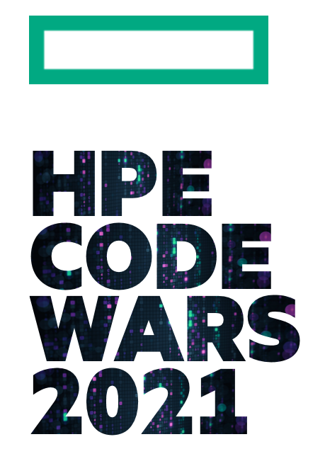
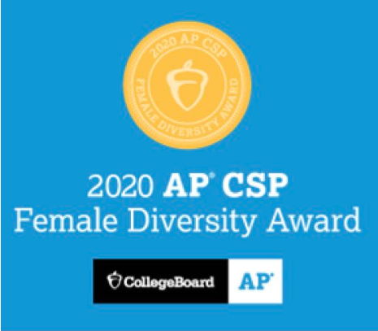

Congratulations to the Class of 2021
May 2021- The Travis Computer Science Honor Society would like to recognize the graduating seniors of the Class of 2021! Many of these CSHS seniors have greately contributed to the start of the club, as many of them are part of the founding team of CSHS as well as the first inducted cohort into our honor society. On behalf of all of CSHS, best of luck to the Class of 2021 in their future endeavors, and never stop discovering, learning, and challenging!
CSHS presents its first inducted cohort
April 2021 - The maiden year of the Travis Computer Science Honor Society has almost concluded, and we are excited to announce that the following members have been inducted into the Travis Computer Science Honor Society for their dedication, commitment, and passion to discovering, learning, and challenging in Computer Science. These individuals are among the very first of CSHS to be inducted into our organization!
- Tolulope Allen-Taylor '23
- Safa Ansari '23
- Danielle Burke '24
- Madison Burke '24
- Lynn Chaker '21
- Zeel Engineer '21
- Uzair Khan '22
- Aidyn Lacks '23
- Ian Ligon '21
- Faiz Maredia '23
- Blessing Ogunfowora '22
- Jared Baron Panares '24
- Alex Pedersen '23
- Samien Rahman '23
- Khushleen Singh '21
- Dhruv Srivastava '23
- Mugunth Siddhesh Suresh Kanna '24
- David Tepeneu '21
- Kyra Terez '23
- Saood Usmani '23
- Hayden Vontz '21
- Daniel Zou '23

Travis CSHS is re-invited to HP Enterprise's 24th Annual Code Wars 2021
February 2021- The Travis High School Computer Science Honor Society is invited by Hewlett Packard Enterprises to attend the prestiogous 24th Annual HP CodeWars Competition! Schools around the nation are invited to participate in this contest where students engage in a full day of computing and problem solving! This contest is held virtually and is scheduled on March 6, 2021.
The Computer Science Honor Society is assessing interest for this competition and will form teams based off of interest. If capacity is limited, tryouts may be held.
CSHS is very proud of this opportunity to attend CodeWars 2021! More information is forthcoming about this event, as details are still being developed.

Travis High School named a recipient of the AP® Computer Science Female Diversity Award by the College Board
January 2021- Studying computer science can open doors for students, giving them the tools to excel, and setting them up for high-paying careers, but girls have been left behind for far too long. That’s why College Board is honoring schools for expanding young women’s access to AP computer science classes and for the important steps they’re taking to reach gender parity.
Schools receiving the AP Computer Science Female Diversity Award have achieved either 50% or higher female exam taker representation in one of or both AP computer science courses, or a percentage of female computer science exam takers that meets or exceeds that of the school’s female population.
1,119 schools are being recognized for their work toward equal gender representation during the 2019-20 school year, nearly 37% more than the 818 schools recognized last year.
831 schools received the award in AP Computer Science Principles.
The winners represent a broad range of high schools from across the country. They include private, public, and charter schools, large and small student bodies, rural and urban populations, and specialized high schools, along with generalized programs.